一、前言
電子設備的CPU與GPU負載會隨工作階段改變，風扇命令又受到轉速響應與輸出限制。Liu等人曾以模型預測控制研究可攜式電子設備的溫度管理[1]；該設備與本研究設定不同，其結果不能直接當作桌機機箱的比較數據。若各研究使用不同負載、熱模型及安全條件，單一追蹤誤差也不足以判斷控制策略的相對表現。
機箱溫控的評估須同時觀察溫度追蹤、風扇代價及超溫情況。增加風扇輸出可能改變這些指標之間的取捨，因此本文分別呈現各項結果，並保留過載與求解回退等不利情形，避免以單一平均值概括整體表現。
比較結果也受可用資訊、參數搜尋範圍與限制處理方式影響。本文將五種策略的理論來源、控制公式及實作設定集中於第三節，明列其資訊使用差異；引用文獻提供控制理論背景，並不提供本文的實體機箱量測或熱參數。
本研究在共同的假設雙熱源模型、相同外生負載與事前固定的選參預算下，比較上述五種策略的追蹤誤差、風扇代價代理及超溫情況，並檢查指定參數失配與過載。所有策略在同一分組與種子下使用相同入口溫度、初始條件及致動規則。本文的貢獻是可核對的共同協定模擬比較及不利結果報告；目前沒有實體機箱量測，故不推論實機效能。
二、熱模型與共同評估條件
2.1 熱模型與共同模擬條件
預定實體機箱試驗場域為一般大樓房間，設有一扇對外窗；室內無直射日光，房間保持通風，且無冷氣或風扇直接吹向進氣口。平常觀察室溫約24–26°C，但尚無連續溫度紀錄。建模時暫以單一入口溫度Tin代表機箱進氣側的等效混合空氣區，使CPU與GPU共享相同環境邊界；進氣區是否可近似等溫，仍須以進氣口多點量測及排氣回流檢查驗證。這是場域描述與待驗證假設，並非已完成實機測試；本文以下模擬的入口溫度另依預設公式產生，不能視為上述房間的實測溫度。
本研究以CPU與GPU作為兩個熱源，分別以等效熱容量描述其熱慣性，並以同一風扇狀態f影響其對入口空氣的散熱。Ti為熱源溫度（°C）、Pi為熱功率（W）、Tin為入口溫度（°C）、Ci為熱容量（J/K）、Gi和ki分別為基礎與風扇相關熱導（W/K），u為正規化PWM。熱容量與等效熱導的能量平衡形式參照集總參數熱網路建模[2]；風扇效應以Gi+ki f表示、風扇狀態採一階響應，均為本研究的簡化假設，並非該文獻的機箱方程或實測辨識結果。據此定義式（1）：
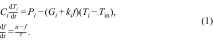
式（1）實際用於五種策略每個模擬回合的狀態更新：第一式計算兩個熱源的溫度，第二式計算風扇對PWM命令的響應。固定PWM、PI及PID不直接用該式求取命令；LQR及MPC另使用其名義模型建立控制或預測關係。此處的模型用途不等同實機驗證。
名義CPU/GPU參數依序為C=1200/1800 J/K、G=1.5/2.0 W/K、k=6/8 W/K；風扇τ=20秒。模型設定的最高轉速為6000 RPM，並非實測風扇曲線。此模型沒有CPU/GPU直接傳熱、機箱幾何、空氣流場或感測雜訊。圖一標示兩個熱源與共同風扇的關係。
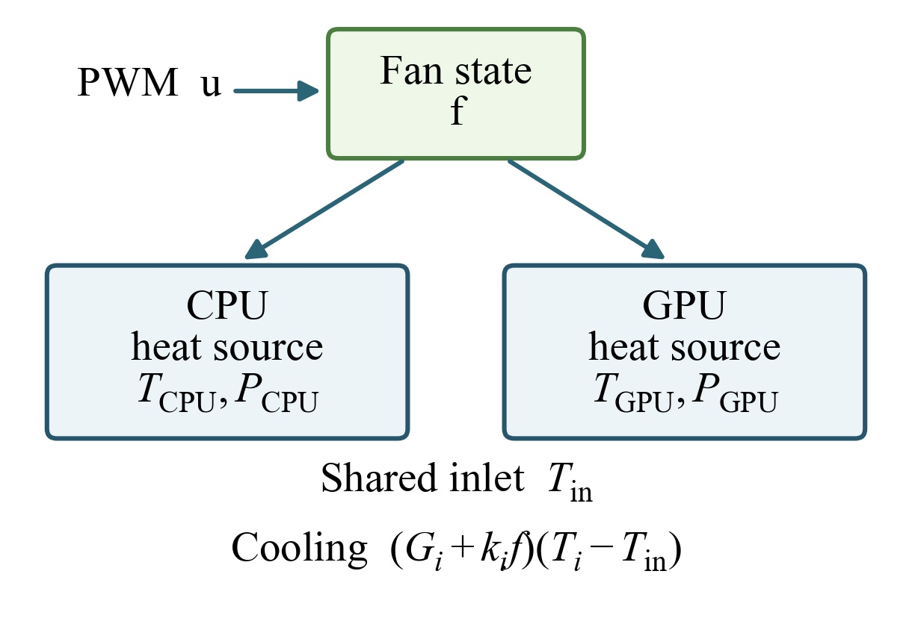
每回合控制120步、每步10秒，共1200秒。熱方程以1秒Euler積分，風扇以一階精確更新。令m為種子除以3的餘數，初始CPU/GPU溫度分別為58+m及59+m°C，初始f及前一u均為0.5；目標均為60°C。CPU/GPU的警告值為75/80°C，評分上限為80/85°C。所有策略的PWM範圍為0.2至1，每次變化至多0.1；共同警告或求解失敗時請求提高風扇，但仍經相同限幅與限速。
入口溫度以28+m°C為基準，在400秒與800秒起分別再增加1.5°C與0.5°C，每步另加入−0.2至0.2°C的均勻隨機擾動。CPU/GPU功率段依當前步數平均分段，再分別加入−5至5 W及−8至8 W的均勻隨機擾動。各組的主要功率段與種子列於表一；同一組別及種子的五種策略共用外生序列。所有策略都能讀到當下真實CPU/GPU溫度與f狀態、入口與功率，但不知道未來負載。因此本篇為完整狀態可見的控制律比較，並未評估稀疏感測或狀態估測。
2.2 測試情境來源與分組目的
本文採預先定義的合成負載情境。表一的功率階段、入口溫度變化規則及擾動範圍均由研究設定檔事先指定，再由程式產生各回合序列，並非取自公開標準測試資料集或真實機箱量測。這些情境用於比較指定條件下的控制反應，尚無實測證據支持其代表一般桌機的典型負載分布。
亂數種子（seed）是偽隨機數產生器的初始化設定，本身不是控制策略。在程式版本及設定固定時，相同種子可重現相同的功率與入口溫度擾動；本文另依種子餘數設定初始溫度與入口溫度基準偏移。同一分組與種子下，五種策略共用上述外生條件，但各自產生風扇命令及後續溫度，形成配對比較。每組三個種子用於觀察有限的情境差異，其平均值及範圍不構成對所有負載或機箱的統計代表性證據。
校準組專供候選參數選擇；每種策略以三組候選各測三個種子，共45個校準回合。參數固定後，另外四組各以三個種子評估五種策略，共60個正式回合。各分組用途如下，表三的「保留」與「失配」分別是「保留測試」及「參數失配」的簡稱。
驗證組在名義熱模型下，以不同於校準組的負載序列與種子檢查選參後的控制表現。保留測試組則使用另一組未參與選參的負載與種子，評估固定參數後的表現。本文兩組均屬選參後的正式評估，均未用於再次調參；兩者在本協定中的實際區別是負載序列與種子配置，不能將驗證組描述為參數選擇資料。
參數失配組改變模擬被控對象的熱容量、熱導、風扇散熱增益及響應時間，LQR與MPC仍使用名義模型，以觀察模型不準確時的表現。該組三個種子分別對應三套參數組合，且同時改變外生擾動，因此結果差異不能全部視為隨機變異，也不能單獨歸因於某一熱參數。
過載組將CPU/GPU基礎功率設為440/580 W並加入既定擾動，用於檢查持續高負載下的溫度偏差、超溫及求解回退。依本文模型，此負載超過維持目標與評分溫度上限所需的散熱能力；此組評估控制與散熱容量的邊界，不以較低平均誤差代表安全。
| 分組 | 種子末三碼 | 依時間排序的CPU/GPU功率段 |
|---|---|---|
| 校準 | 601–603 | 90/130; 170/235; 120/165; 185/255 |
| 驗證 | 611–613 | 125/180; 205/285; 75/115; 160/225 |
| 保留測試 | 621–623 | 175/245; 85/135; 215/295; 110/160; 155/220 |
| 參數失配 | 631–633 | 同保留測試 |
| 過載 | 641–643 | 440/580 |
參數失配組將真實plant依種子分別改為：(102631) CPU/GPU的C倍率0.90/1.15、G倍率0.95/1.05、k倍率0.85/0.80、τ=28秒；(102632) 1.15/0.85、1.10/0.90、1.05/0.90、τ=16秒；(102633) 0.75/1.25、1.00/1.00、0.70/0.65、τ=36秒。控制器仍使用名義模型。這三組是指定同族壓力測試，不能代表所有未知機箱，也無法單獨識別某個參數的因果影響。
三、五種策略原理與實作
以下依基本原理、控制公式、本文用法及參數限制介紹五種策略。下標k代表控制步，取樣週期h=10秒；狀態x由CPU溫度、GPU溫度與風扇狀態f組成。v為策略計算的原始命令，u為經第二節共同警告、限幅及限速規則後的實際PWM。警告或數值失敗時改請求u=1，仍受每步0.1的變化上限約束。各策略的候選集合與選定值集中列於表二。
3.1 固定PWM基準策略
固定PWM以預設占空比驅動風扇，正常情況下不依溫度誤差調整命令，可作為觀察回授控制作用的基準。其控制式為：
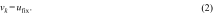
本文選定固定值0.6，候選為0.4、0.6、0.8。此策略仍經共同警告與致動限制，故警告時的實際輸出不一定保持0.6。其限制是一般運轉時不主動補償負載或入口溫度變動，也不使用熱模型預測。
3.2 比例積分控制策略 PI
PI以比例項回應當下偏差，並以積分項累積偏差，其回授結構可參照文獻[3]。本文取兩個熱源相對60°C的較大溫度偏差為e；正偏差對應提高風扇命令。離散控制式為：
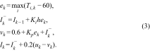
I表示已含積分增益的控制量，初始值為0；上標減號表示反算修正前的暫存值。最後一式以實際與原始命令之差修正積分，減輕限幅及限速造成的積分累積。本文選定Kp=0.06、Ki=0.0003，固定偏置為0.6。PI未使用功率或入口溫度的模型前饋，亦未分別控制兩個熱源，因此不能保證兩者同時精確維持60°C。
3.3 比例積分微分控制策略 PID
PID在PI結構中加入誤差變化率，使命令同時反映偏差及其變動趨勢[3]。本文沿用式（3）的誤差、積分與反算程序，以低通處理後的微分量D形成命令：
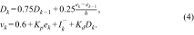
首步D=0，後續依式（4）更新；數值回退時，PI及PID均重設積分與誤差記憶，PID另重設D。本文選定Kp=0.06、Ki=0.0003、Kd=0.05，低通係數為0.25。PID同樣沒有模型前饋；本模型未加入感測雜訊，故不能由本次結果判定微分項在實際量測下的效果。
3.4 線性二次調節策略 LQR
LQR以線性狀態模型及二次成本求取回授增益，其調節器理論可參照文獻[4]。本文每步先以名義熱參數和當下入口溫度、功率選取可行工作點。對候選占空比u，定義穩態溫度與工作點選取成本：
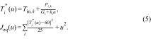
以0.2至1的有界純量搜尋及兩端點比較，選取成本較低的u*，並令x*由兩個穩態溫度與f*=u*組成。式（5）的ki是熱模型風扇增益，與PI/PID的積分增益Ki不同。於x*線性化式（1），採零階保持精確離散化取得A、B，再解離散Riccati方程得到S與增益K。以δx=x−x*、δu=u−u*表示局部偏差，其二次準則與回授式為：
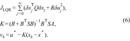
本文Q為對角矩陣，對角元素依序為0.04、0.04、0，選定R=0.1；每步檢查Riccati正規化殘差不超過10−5及局部閉迴路譜半徑小於1，失敗則回退。LQR使用名義模型及當下負載，與本文PI/PID的資訊使用不同。PWM限制在回授後施加，不能把此局部設計解讀為含所有限制的全域最佳解或實機穩定保證。
3.5 模型預測控制策略 MPC
MPC在每個控制步預測有限時域，解出命令序列後僅施加第一步，再依新狀態重新求解[5]。本文以當下狀態線性化名義模型，採與LQR相同的零階保持離散化程序，但線性化位置不同。令θ為預測的兩個熱源溫度向量、r=(60,60)ᵀ，未來輸入與非負溫度鬆弛量序列分別為U與Ξ，其成本為：
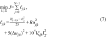
預測模型與限制為：
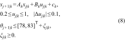
其中j=0至N−1，x的初值為當下狀態；首個Δu以先前實際PWM為基準，其餘為相鄰預測命令之差。本文N=12、選定R=0.1，預測期間固定當下入口溫度及功率，不預知未來負載，亦未另加終端成本或終端集合。式（7）至（8）以OSQP求解[6]；設定絕對與相對求解容許誤差均為10−7，最大迭代次數為100000，並要求求解成功、原始及對偶殘差與直接限制檢查均不超過10−5，否則回退。溫度上限容許鬆弛，且模型可能失配，故求解成功並不等同實際溫度安全。
3.6 共同選參程序與執行環境
五種策略各事先定義三個候選；每候選在相同的三個校準種子上評估，共45個校準回合。選參分數由三項相加：兩熱源及全時步的平均平方追蹤誤差除以25、平均PWM三次方乘0.01，以及兩熱源及全時步的平均正向超溫平方乘10000；正向超溫指超出各自評分上限的部分。三種子等權，平手按候選原順序。所選參數在正式測試前凍結；沒有按測試plant事後重調。表二列選定值及完整候選集合。相同候選回合數不等於相同搜尋範圍、模型利用方式或計算成本。
具體模擬實驗環境為兩個熱源與一個共同風扇狀態；以10秒控制週期、每回合120步、每組3個固定種子運行。外生入口溫度與CPU/GPU負載依第二節公式及表一產生，五種策略在同一種子共用相同序列；無機箱實體、感測器、風扇量測或硬體在迴路。凍結執行環境為Python 3.11.15、NumPy 1.26.4、SciPy 1.14.1及OSQP 1.0.4。這些是軟體與求解設定，並非實時硬體時限或跨平台速度保證；原凍結紀錄未列CPU型號、作業系統與記憶體規格，本文不補推硬體規格。
| 策略 | 三組候選及選定值 |
|---|---|
| 固定PWM | u=0.4; 0.6; 0.8。選定u=0.6。 |
| PI | (Kp,Ki)=(0.01,0.00005); (0.03,0.0001); (0.06,0.0003)。選定第3組。 |
| PID | 上列Kp/Ki依序配Kd=0.01; 0.03; 0.05。選定(Kp,Ki,Kd)=(0.06,0.0003,0.05)。 |
| LQR | 輸入權重R=0.1; 1; 10。選定R=0.1。 |
| MPC | 輸入權重R=0.1; 1; 10。選定R=0.1。 |
四、實驗評估數據
正式評估包含驗證、保留測試、參數失配與過載四組，每組3個種子、5種策略，共60回合；加校準總計105回合及12,600步。每回合追蹤MAE為120個區間末端CPU/GPU相對60°C的絕對誤差之等權平均，再將同一分組三回合等權平均。風扇代價是將假設功率10u³ W按10秒累積的Wh；取樣超溫是區間末端任一熱源溫度超過80/85°C的步數乘10秒。前者不是實測電功率，後者也不是連續時間的精確超溫長度。表三將每一分組的五種策略完整列出。
| 分組 | 策略 | MAE °C | 風扇代價代理 Wh/回合 | 超溫 秒/回合 |
|---|---|---|---|---|
| 驗證 | 固定PWM | 3.2484 | 0.7200 | 0.0 |
| 驗證 | PI | 2.6463 | 0.8606 | 0.0 |
| 驗證 | PID | 2.6389 | 0.8591 | 0.0 |
| 驗證 | LQR | 1.5090 | 1.0544 | 0.0 |
| 驗證 | MPC | 1.5504 | 1.0774 | 0.0 |
| 保留 | 固定PWM | 2.3462 | 0.7200 | 0.0 |
| 保留 | PI | 2.2964 | 0.9550 | 0.0 |
| 保留 | PID | 2.2879 | 0.9538 | 0.0 |
| 保留 | LQR | 1.4104 | 1.1048 | 0.0 |
| 保留 | MPC | 1.4428 | 1.1064 | 0.0 |
| 失配 | 固定PWM | 4.4514 | 0.7200 | 0.0 |
| 失配 | PI | 3.0302 | 1.7525 | 0.0 |
| 失配 | PID | 3.0246 | 1.7528 | 0.0 |
| 失配 | LQR | 2.7866 | 1.6261 | 0.0 |
| 失配 | MPC | 2.7605 | 1.5389 | 0.0 |
| 過載 | 固定PWM | 25.7896 | 3.1125 | 1093.3 |
| 過載 | PI | 24.9207 | 3.2669 | 1020.0 |
| 過載 | PID | 24.9207 | 3.2669 | 1020.0 |
| 過載 | LQR | 27.1265 | 3.0133 | 1123.3 |
| 過載 | MPC | 24.8929 | 3.2722 | 1020.0 |
在保留測試組，LQR的平均MAE為1.4104°C，低於PID的2.2879°C，以PID未四捨五入值為分母約低38.35%；LQR的風扇代價代理1.1048 Wh/回合則比PID的0.9538 Wh/回合約高15.83%。PI與PID的MAE僅差約0.0085°C。在驗證與保留組，LQR的平均MAE最低；在三種指定失配與過載組，MPC的平均MAE最低。這些都是每組三回合的描述性結果，未進行獨立機箱抽樣或顯著性檢定。
表四顯示各組三個種子的單回合MAE範圍。保留組LQR與MPC的範圍互有重疊，不能由三個種子的小幅平均差推論一般排名。失配組兩者範圍更寬，因每個種子同時對應不同的plant參數及外生負載，不能將範圍直接當作單純隨機變異。原始105回合軌跡均已保存；45個校準與60個正式回合的逐回合摘要、參數及trace雜湊分別整理為研究資料包，表三及表四均直接從凍結結果重算。
| 分組 | PID | LQR | MPC |
|---|---|---|---|
| 驗證 | 2.566– 2.703 | 1.500– 1.514 | 1.517– 1.589 |
| 保留 | 2.271– 2.317 | 1.373– 1.440 | 1.427– 1.454 |
| 失配 | 2.617– 3.481 | 2.030– 3.379 | 2.105– 3.237 |
| 過載 | 23.982– 25.918 | 26.232– 27.947 | 23.899– 25.918 |
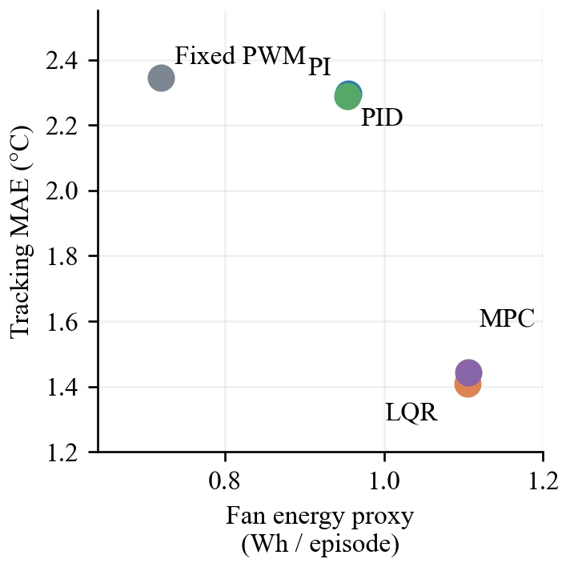
圖三呈現保留測試第一個回合（seed 102621）的CPU與GPU溫度響應。五種策略使用相同初始條件、熱功率及入口溫度序列；曲線由式（1）的逐步狀態更新結果繪製，每10秒保留一點，涵蓋0至1200秒。負載在240、480、720及960秒切換，溫度隨之呈現下降與上升。在240至480秒及720至960秒的較低負載區間，LQR與MPC的溫度較接近60°C目標；PI與PID曲線幾乎重疊，對應表三中兩者相近的平均追蹤誤差。
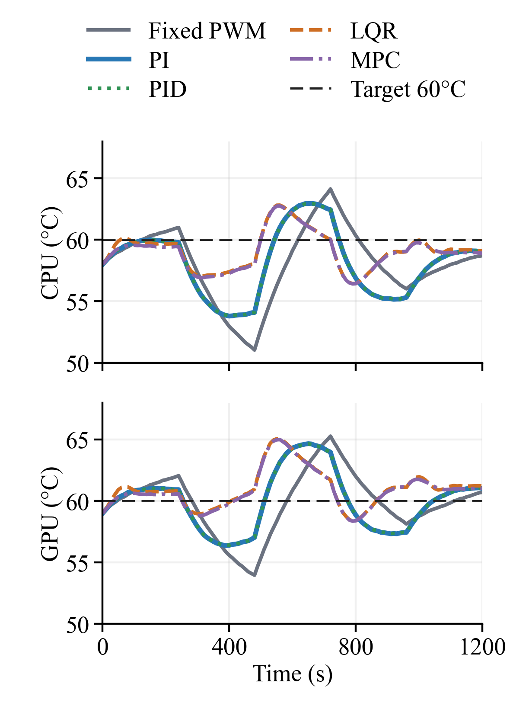
過載下五種策略都有取樣超溫，不能因MPC平均MAE較低就稱其安全。MPC在過載seed 102642的第3步出現一次回退：求解器回報solved，但primal residual約4.4491×10−5，超過本研究1×10−5的接受門檻。此回退步仍納入全部指標。正式回合沒有PWM範圍與單步變化限制違反，但該檢查不代表溫度限制全部滿足。已有獨立資料稽核對105回合、12,600列及1,995個回合指標核對通過；稽核不包含獨立重新最佳化LQR/MPC。
五、討論與限制
名義條件下LQR的較低誤差與較高代價同時出現，不能將其解讀為整體最佳。LQR/MPC使用名義熱模型及當下負載，PI/PID則使用沒有模型前饋的固定偏置回授；這一結構差異是可觀察的設計事實，但本試驗沒有單獨介入前饋或成本權重，尚不能證明何者造成MAE差距。PI與PID在本候選集合中的差異極小，也不能據此推斷微分項一般無效。若欲辨識原因，須在新資料前固定有/無前饋、微分、權重及模型參數的消融規則。
指定失配組三個seed同時改變多項物理參數；其MPC平均誤差略低於LQR，僅說明這三個組合的結果。過載時，在入口溫度與功率固定的條件下，將式（1）的溫度變化率設為零，可得名義穩態溫度；再令風扇狀態f=1，得到滿轉條件下的式（9）：
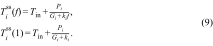
式（9）的上標ss表示穩態。以CPU/GPU基礎功率440/580 W計算，滿轉時兩者的穩態溫升分別約為58.67°C與58°C；加上本組入口溫度後，均高於60°C目標及各自評分上限。這是指定模型的容量計算，並非實測。後續需要另評估降低熱負載或增加散熱能力，並以新的測試資料檢查求解回退；控制器無法創造模型以外的散熱容量。
本文使用完整真實狀態與假設的雙熱源模型參數、三個seed／分組和有限候選，沒有機箱尺寸、CFD、物理風扇曲線、感測噪聲、實測功率或硬體保護測試。取樣超溫不能排除10秒間的峰值；風扇功率三次方僅作代價代理。結果適用於列明的模擬協定，不推論未知硬體的安全、節能或通用策略排名。
下一階段宜先量測入口與熱源功率、CPU/GPU多點溫度、實際PWM到RPM延遲及風扇電功率，以辨識各熱源的等效熱容量與熱導並量化模型殘差。之後應把量測噪聲、狀態估測和未見過的負載序列納入同一預註冊協定，另設固定風扇、相同資訊量的PI/PID、LQR及MPC比較；成本權重與選參範圍須在保留測試前鎖定。若量測顯示高負載下物理散熱容量不足，優先處理熱源降載、風道或散熱器，而不是只增加控制器複雜度。這些均為後續驗證步驟，尚未取得實體數據。
六、結論
在相同假設雙熱源模型、完整當下狀態可見、共同PWM限制及事前凍結的候選集合下，五種風扇控制策略完成45個校準回合與60個正式評估回合。名義保留測試組中，LQR平均追蹤MAE為1.4104°C，低於PID的2.2879°C，約降低38.35%；但LQR風扇代價代理為1.1048 Wh/回合，高於PID的0.9538 Wh/回合，約增加15.83%。因此，較低溫度誤差伴隨較高的模型計算風扇代價，不能直接稱為整體最佳或實測節能。
在三個預先指定的參數失配組合中，MPC的平均追蹤MAE為2.7605°C，略低於LQR的2.7866°C；該差異僅描述本組三個種子，不能推論未知機箱的普遍排名。過載組五種策略均出現取樣超溫，MPC另有一步因求解殘差未過接受門檻而回退。該步已保留於指標，說明求解成功、限制檢查通過及溫度安全是不同問題；控制器亦無法彌補指定模型的散熱容量不足。
本研究的可支持結論限於上述模擬協定。LQR/MPC使用名義熱模型和當下負載，PI/PID沒有模型前饋，現有設計不能把差異歸因於單一控制機制。下一階段應先取得真實機箱的同步溫度、入口溫度、CPU/GPU功率、PWM/RPM與風扇電功率，於獨立資料辨識熱參數，再以相同實機、負載順序與保護條件比較五種策略；並預先固定前饋、權重與模型失配的消融設計。在完成實機介入與獨立重複前，本文不宣稱實體機箱改善、節能或硬體安全。
參考文獻
[1] H. Liu, J. Yu, R. Wang, “Numerical investigation on model predictive control of portable electronic devices based on MATLAB/FLUENT co-simulation framework,” Applied Thermal Engineering, vol. 232, art. 121079, 2023. DOI: 10.1016/j.applthermaleng.2023.121079.
[2] J. M. Ortiz-Rodríguez, A. R. Hefner Jr., D. Berning, M. Vélez-Reyes, M. Hernández-Mora, J. González, “Lumped-Parameter Thermal Modeling of an IPEM using Thermal Component Models,” Proc. IEEE Workshop on Computers in Power Electronics, pp. 43–48, 2004.
[3] K. J. Åström and R. M. Murray, Feedback Systems: An Introduction for Scientists and Engineers, 2nd ed., Princeton University Press, 2021. ISBN: 9780691193984.
[4] R. E. Kalman, “Contributions to the Theory of Optimal Control,” Boletín de la Sociedad Matemática Mexicana, vol. 5, pp. 102–119, 1960.
[5] D. Q. Mayne, J. B. Rawlings, C. V. Rao, P. O. M. Scokaert, “Constrained model predictive control: Stability and optimality,” Automatica, vol. 36, no. 6, pp. 789–814, 2000. DOI: 10.1016/S0005-1098(99)00214-9.
[6] B. Stellato et al., “OSQP: an operator splitting solver for quadratic programs,” Mathematical Programming Computation, vol. 12, no. 4, pp. 637–672, 2020. DOI: 10.1007/s12532-020-00179-2.